Git 笔记¶
约 4596 个字 56 行代码 39 张图片 预计阅读时间 17 分钟
作为计科专业的学生,怎么能不会Git呢
git命令比较多,有些命令的意义比较长难以一直记住,在这里推荐一个非常好用的工具tldr，Too long don't read~
安装¶
Windows 用户可以通过Git官网下载安装包进行安装
Linux 用户可以通过以下命令进行安装
macOS 用户可以通过以下命令进行安装
检验是否安装成功¶
在终端中输入以下命令,如果出现版本号,则说明安装成功
git 是怎么工作的
首先,有以下几个概念
-
工作区 (Working Directory): 这是你在本地计算机上看到的文件和目录。你在这里进行文件的添加、修改和删除操作。
-
暂存区 (Staging Area): 当你对工作区中的文件进行修改后，可以使用
git add命令将这些修改添加到暂存区。暂存区是一个临时区域,它是工作区和本地仓库的桥梁，起到缓冲的作用,用于记录即将提交的更改。 -
本地仓库 (Local Repository): 使用
git commit命令将暂存区中的更改提交到本地仓库。提交后，这些更改将被记录在本地仓库的历史记录中。 -
远程仓库 (Remote Repository): 远程仓库是存储在服务器上的 Git 仓库。你可以使用
git push命令将本地仓库中的更改推送到远程仓库，或者使用git pull命令从远程仓库拉取最新的更改。 -
版本库 (Repository): 版本库是 Git 用来保存项目历史记录的地方。它包含了所有提交的记录和项目的所有版本。在本地仓库中,版本库是.git文件夹,在远程仓库中,版本库是远程仓库里面的.git文件夹
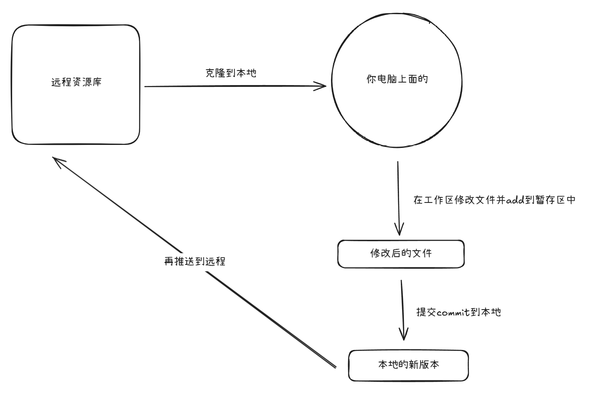

本地操作¶
初始化¶
创建一个文件夹,然后进入文件夹,在终端中输入以下命令
这条命令会在当前目录下创建一个.git文件夹,这个文件夹就是版本库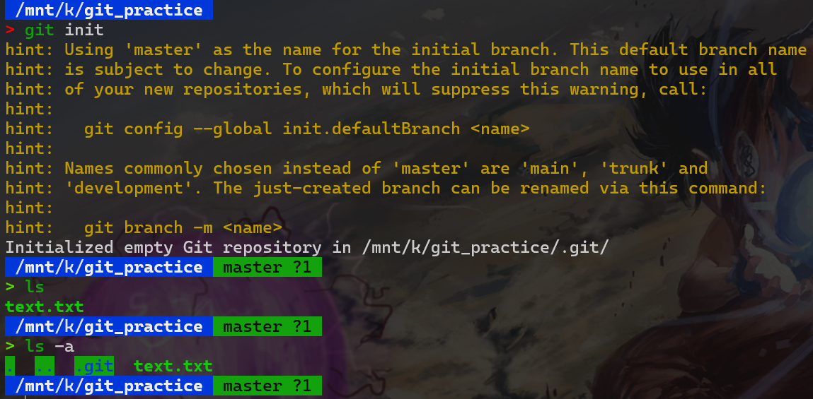
添加文件¶
此时 工作区 中有一个text.txt文件,现在我们想把这个文件添加到 暂存区 中
此时 暂存区 中就多了一个text.txt文件，我们可以使用
来查看此时git的状态
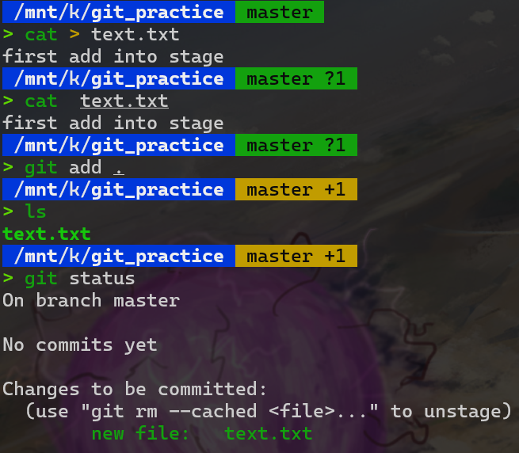
在这里,将文件加入暂存区后,文件就在暂存区中等待我们的提交(Commit)了
常见的 git add 的指令
-
添加单个文件：
例如，添加text.txt文件： -
添加多个文件：
例如，添加file1.txt、file2.txt和file3.txt： -
添加当前目录下的所有文件：
这条命令会将当前目录下的所有更改添加到暂存区。 -
添加特定目录下的所有文件：
例如，添加src目录下的所有文件： -
添加符合特定模式的文件：
这条命令会将当前目录下所有.txt文件添加到暂存区。 -
交互式添加文件：
这条命令会进入交互模式，允许你选择性地添加文件。 -
更新已追踪文件的更改：
这条命令只会添加已追踪文件的更改，不会添加新文件。 -
添加所有更改，包括未追踪文件：
这条命令会将所有更改（包括新文件和删除的文件）添加到暂存区。
这些指令可以帮助你根据不同的需求灵活地将文件添加到 Git 的暂存区中。
提交¶
例如,在上面的例子中,我们可以运行 来进行提交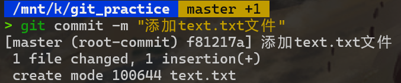
查看信息
[master (root-commit) f81217a] 添加text.txt文件
1 file changed, 1 insertion(+)
create mode 100644 text.txt
我们可以通过
来查看提交信息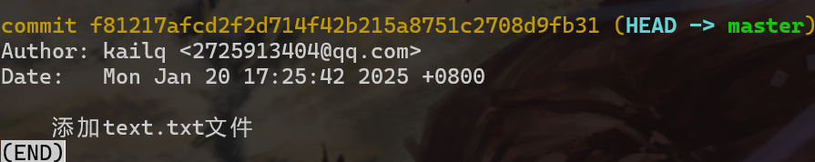
这里展示了完整的提交信息,包括提交的哈希值,提交信息,提交时间,提交者等信息，如果不想要看到这么多信息,可以使用
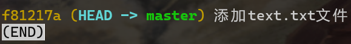
版本回退¶
设想这样一个场景,你修改了十次文件,然后你发现你修改错了,现在你想要回到你修改前的状态,如果没有git,而你的编辑器又恰好不能一直Ctrl+Z到你修改前的状态,那么你只能手动一个一个的改回去,这显然是非常麻烦的,而git可以轻松的解决这个问题
Git使用git reset 命令来回退版本,git reset 命令有三个参数
- --soft: 回退到某个版本,但是不改变任何东西
- --hard: 回退到某个版本,并丢弃工作区,和暂存区的所有修改内容
- --mixed: 回退到某个版本,保留工作区的修改，丢弃暂存区的修改
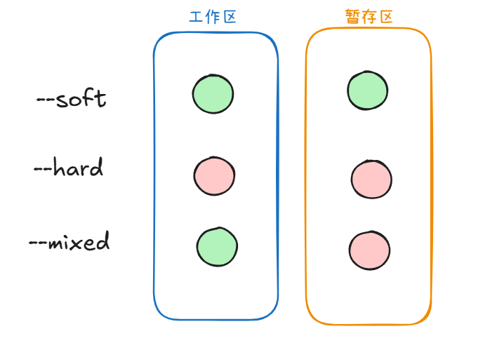
接下来我们具体看看它们是怎么工作的,首先我们创建两个文件,并进行两次提交
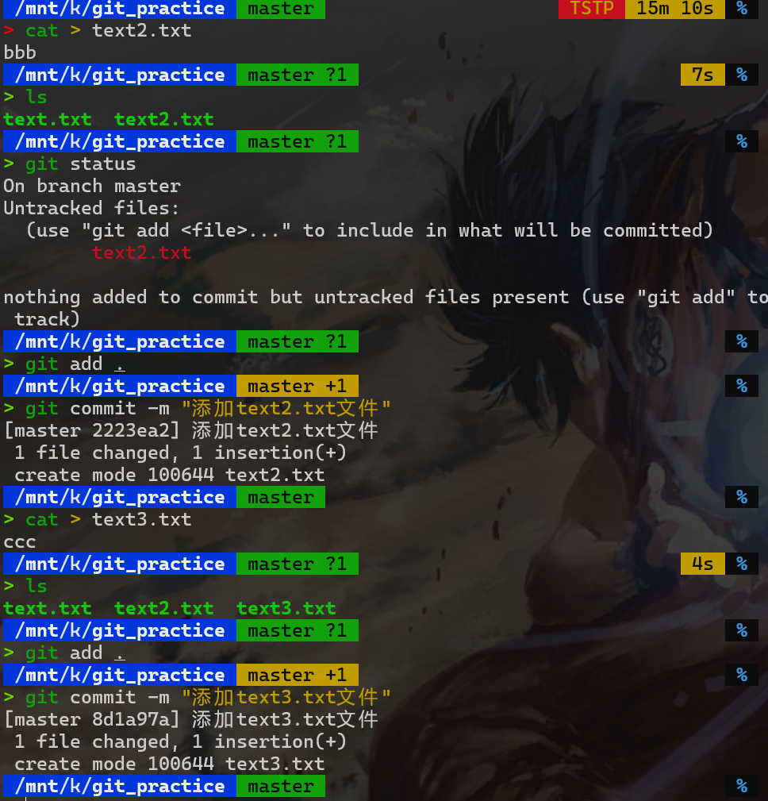
此时Head指向的是第三次提交,也就是master分支的最新版本,此时工作区有三个文件,暂存区为空
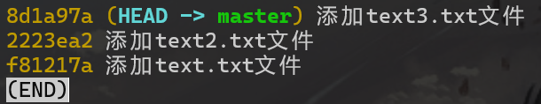
为了方便比对三种不同指令,将这个仓库复制两个副本,分别命名为git_practice1和git_practice2
--soft¶
现在,我们修改text1.txt文件,并进行一次add
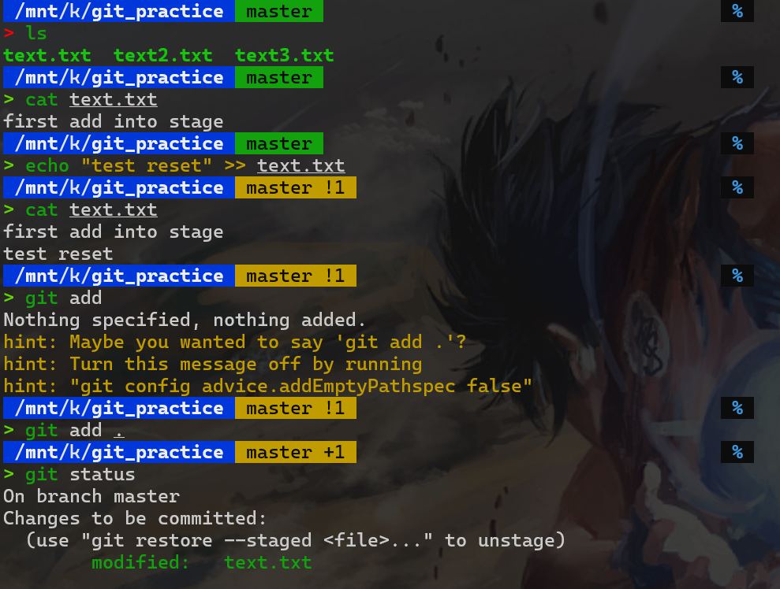
现在，使用soft指令回退到第第一次提交
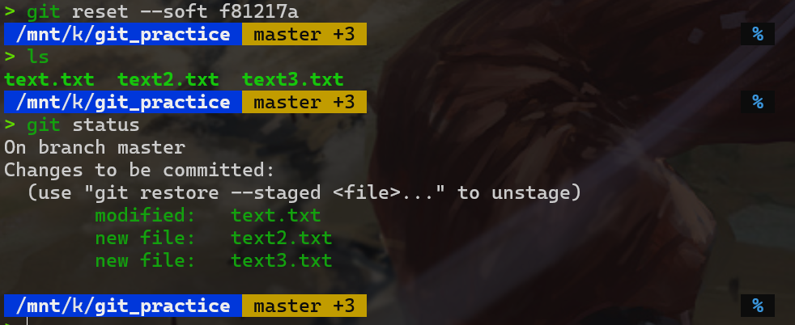
可以看到,工作区没有发生任何变化,但是暂存区发生了变化,我们之前提交的text2和text3文件变成了new file;
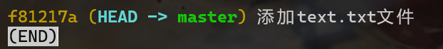
同时两次提交都不见了,HEAD指向了第一次提交
soft指令保存所有的更改,仅仅在commmit种有变化,这在处理只想要回退到某个版本,但是不想要丢弃工作区,和暂存区的修改时非常有用
--hard¶
现在,我们进入git_practice1,并进行一次add
使用hard指令回退到第一次提交
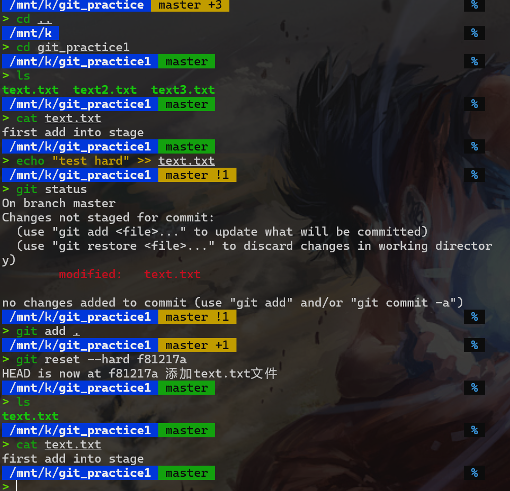
可以看到,工作区,暂存区,和提交都发生了变化,工作区,暂存区,和提交都变成了第一次提交的样子
相当于第二次第三次提交以及它们的修改都没有发生过,执行类似于Ctrl+Z的操作
--mixed¶
现在,我们进入git_practice2,并进行一次add，然后使用mixed指令回退到第一次提交
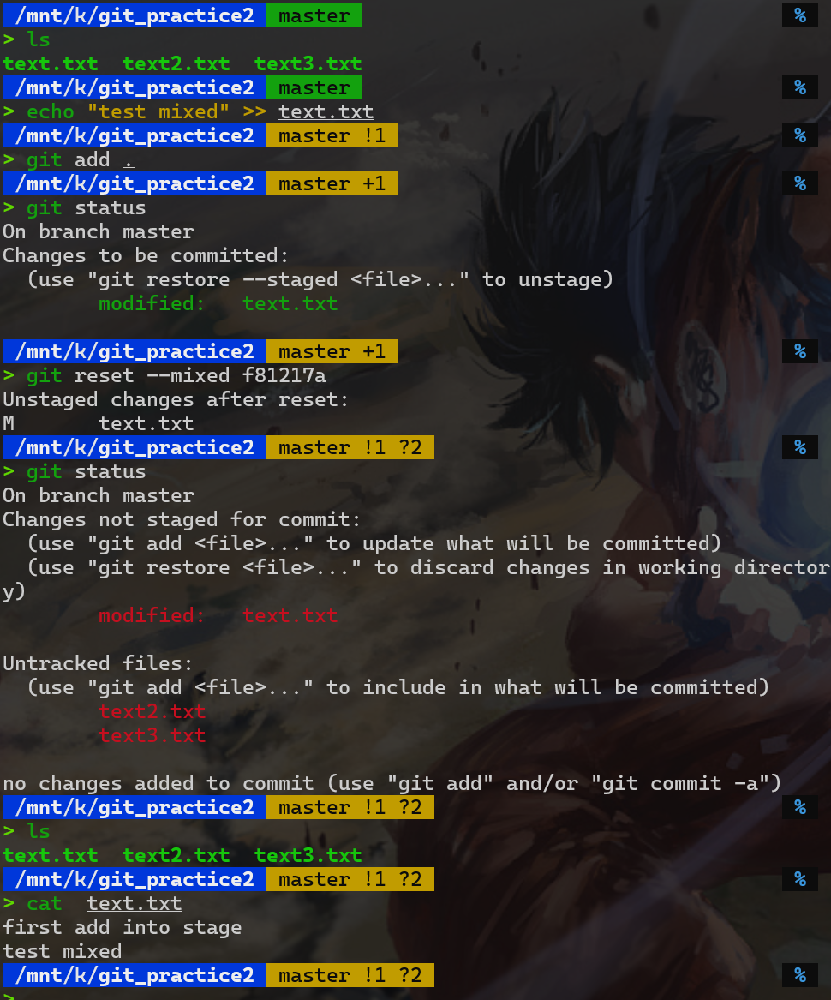
可以看到,暂存区空空如也,而工作区仍然是修改后的样子,相当于进行了修改,但是没有进行任何提交
注意
--Hard会丢弃所有的修改,一定要慎用,一般都推荐使用--soft和--mixed
同时在上面我们也可以发现,使用soft的时候,不会给你任何提示,使用hard会告诉你现在head在哪里,使用mixed会告诉你unstaged changes,也就是未暂存的变化(在上面的例子中是M text.txt),即修改后(Modified)的text.txt文件从暂存区中移除
在实践过程中,可以使用git ls-files来查看暂存区中的文件
可以使用git status来查看工作区,暂存区,和提交的状态
Revert¶
如果仅仅想要撤销某个提交,可以使用git revert命令,它会创建一个新的提交,撤销之前的提交
-n参数表示不进行提交,也就是不生成新的提交,而是直接在当前分支上进行撤销,等待你手动进行提交
如果想要撤销一系列提交,可以使用
例如,我们的提交链是这样的
如果我们想要撤销B和C,可以使用
git diff¶
git diff命令可以用来查看工作区,暂存区,和提交之间的差异,也可以用来比较两个分支之间的差异,以及不同版本文件之间的差异
工作区vs暂存区¶
默认不加任何参数,git diff会显示工作区与暂存区之间的差异
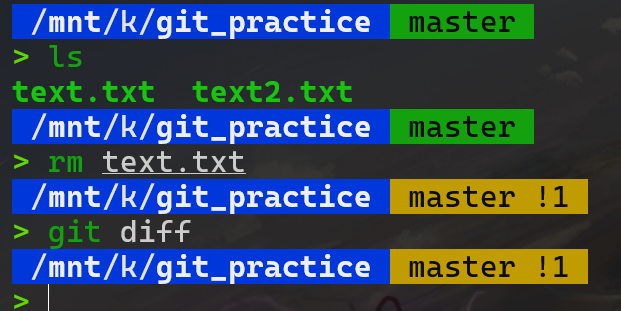
可以发现,工作区中删除了text.txt文件,而暂存区中没有发生变化
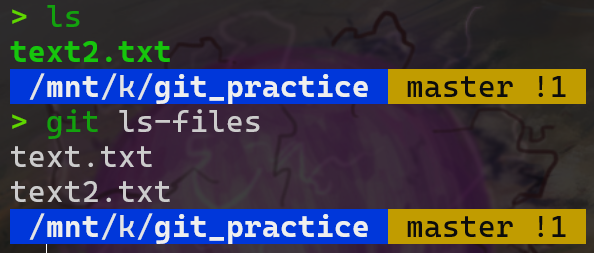
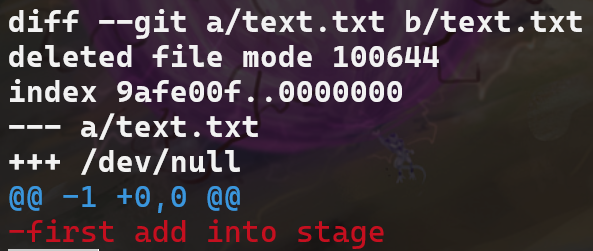
这时git diff会显示工作区与暂存区之间的差异，删除了text.txt文件，什么都没有增加
工作区vs提交¶
这条命令会显示当前工作区与指定提交之间的差异
例如,我们运行
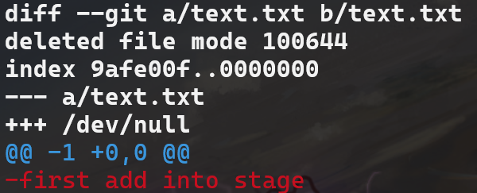
可以看到,工作区中添加了text.txt文件,而提交中没有发生变化
暂存区vs提交¶
这条命令会显示暂存区与指定提交之间的差异
例如,我们运行
这时候没有任何差异,因为我们没有把工作区的修改添加到暂存区
我们进行一次add
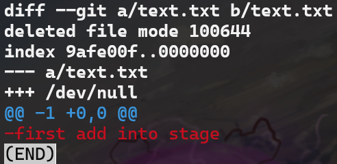
可以看到,暂存区与提交之间发生了差异,也就是我们添加的text.txt文件
此时运行git ls-files可以看到暂存区中的文件,只包含text2.txt文件
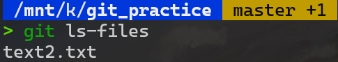
提交vs提交¶
这条命令会显示两个提交之间的差异
例如,我们删除text.txt文件,并进行一次提交后，运行
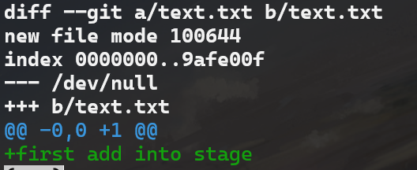
可以看到,第二次提交与第一次提交之间发生了差异,也就是我们删除的text.txt文件
如果想要查看特定文件在不同提交之间的差异,可以使用
Note
git diff 版本1 版本2,指的是与版本1相比,版本2的变动；HEAD代表当前分支的最新版本，HEAD^代表当前分支的上一版本
例如,我们想要查看text.txt文件在第一次提交和第二次提交之间的差异,可以使用
分支vs分支¶
这条命令会显示两个分支之间的差异
删除文件¶
删除文件有以下几种方式
rm+add:首先使用rm命令删除文件,然后使用add命令将删除的文件添加到暂存区
git rm:直接使用git rm命令删除文件,这个命令会同时将删除的文件添加到暂存区
相当于是rm+add的快捷命令
git rm --cached:这个命令会删除文件,但是不从工作区中删除,而是从暂存区中删除
我们首先在仓库里多创建几个文件,然后测试三条指令
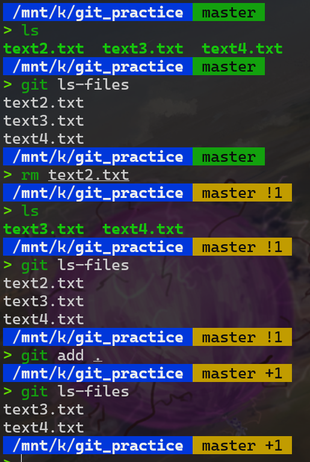
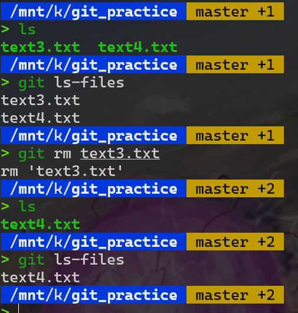
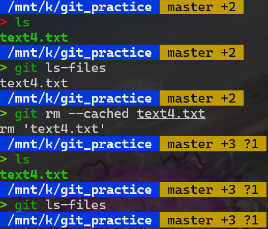
最后我们commit一次,将三个文件从版本库中删除
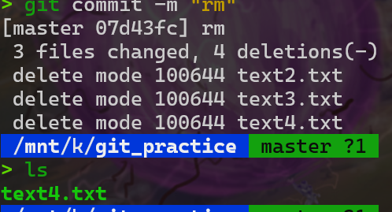
可以看到删除了三个文件,但是工作区中的text4文件仍然存在(可以使用git diff查看版本差异进一步确认删除的文件)
分支¶
分支是Git中一个非常重要的概念，它允许你在同一个仓库中同时进行多个开发工作。分支的存在使得你可以在不影响主线代码的情况下进行开发、测试和实验。
分支的存在使得多人的协同开发变得容易,可以同时进行多个开发工作,而保持主线的稳定工作;
每个分支都有自己的提交历史,分支之间可以相互合并,也可以相互独立;
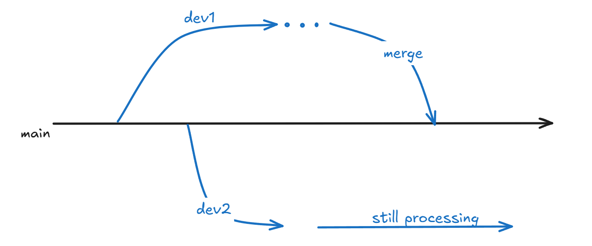
创建一个分支，可以使用以下命令
例如,创建一个名为dev的分支
创建之后，可以使用git branch查看所有分支
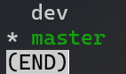
这里可以看到master和dev两个分支,前面的*表示当前所在的分支,也就是master分支
现在，假设我们要在dev分支上进行一系列开发工作,首先需要切换到dev分支
git switch
使用git checkout命令的时候，可能会存在一些潜在的问题:除了切换分支之外,git checkout还可以用来恢复文件或者目录到之前的某一个状态,比如我们意外修改了某一个文件,可以使用git checkout -- <file_path>来恢复文件(如果暂存区中有,则恢复到暂存区中的文件,否则恢复到上一次提交的文件);而这个时候如果分支名和文件名相同,就会出现歧义,git checkout会默认切换分支而不是恢复文件,为了避免这种情况,可以使用git switch命令来切换分支;
切换之后，可以使用git branch查看当前所在的分支;
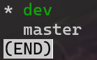
现在,我们在dev分支上进行一系列开发工作,添加一系列文件；
在这一过程中，我们的主线上也进行的提交
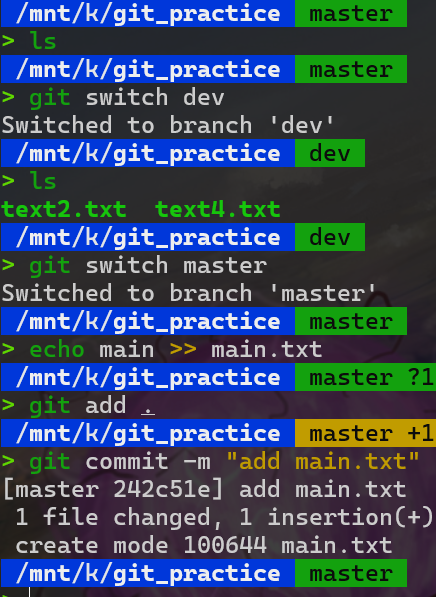
现在假设dev上的开发以已经完成了,我们想要将dev分支合并到master分支上,可以使用以下命令
意为将dev分支合并到 当前所在分支 (master分支)上,合并之后,如果没有冲突,会自动进行一次commit;
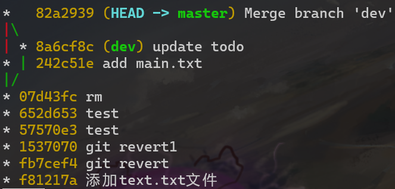
Info
使用git log --oneline --graph可以查看分支合并的过程
实际上,git log有很多参数可以使用
--oneline: 只显示一行提交信息--graph: 显示分支合并的过程--all: 显示所有分支的提交历史--reverse: 逆序显示提交历史--since=<date>: 显示从某个日期开始的提交历史--until=<date>: 显示到某个日期为止的提交历史--author=<pattern>: 显示某个作者的提交历史--grep=<pattern>: 显示包含某个关键字的提交历史
并且可以组合使用,例如git log --oneline --graph --all
merge结束后的分支仍然存在,如果想要删除某个分支,可以使用
注意-d只能删除已经进行过合并的分支,如果想要强制删除某个分支,可以使用
即使用大写的D
分支合并冲突¶
假设不同的开发者同时对同一个文件的同一个地方进行修改,那么合并的时候就会发生冲突,Git会提示你发生了冲突,你需要手动解决冲突
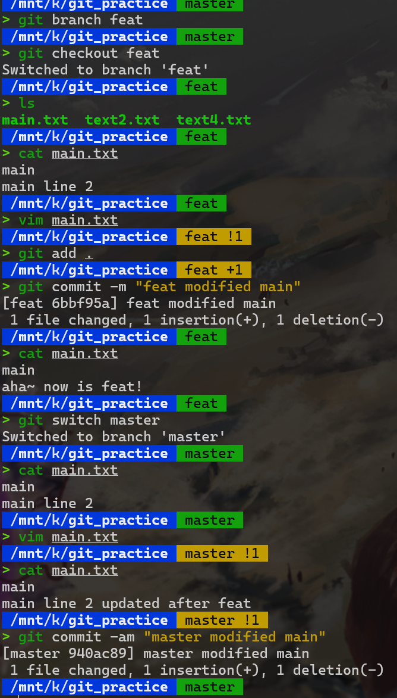
在这一过程中,我首先在分支feat上对main.txt文件进行了修改,然后进行了一次commit,然后切换到master分支,对main.txt文件相同位置进行了修改,然后进行了一次commit;
现在我们试图将feat分支合并到master分支上,会发生冲突;
此时查看main.txt文件,可以看到发生了冲突;
> cat main.txt
main
<<<<<<< HEAD
main line 2 updated after feat
=======
aha~ now is feat!
>>>>>>> feat
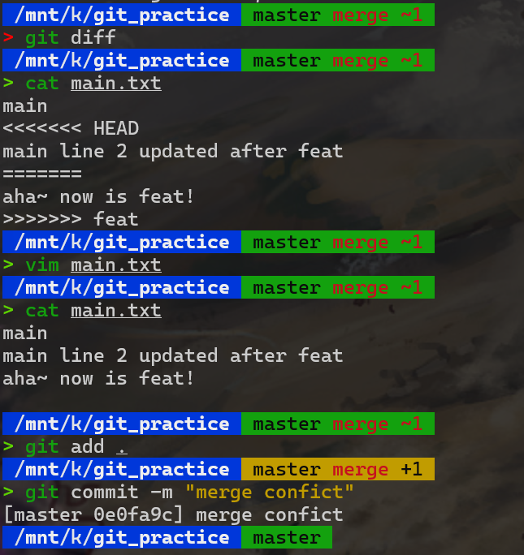
运行git diff或者直接查看发生冲突的文件都可以看到冲突;
解决冲突，保留我们想要的内容，然后进行一次commit，解决冲突；
最后我们来看看合并后的的git log
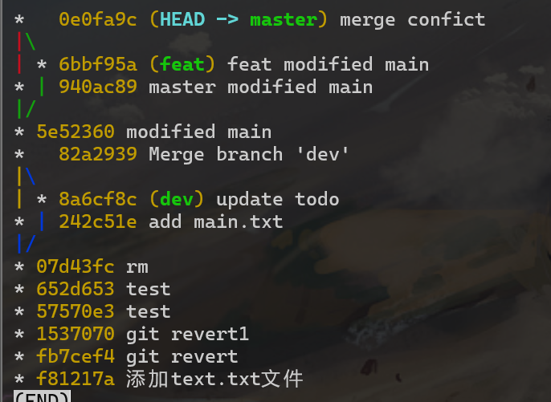
可以看到,master分支的提交历史中包含了feat分支的提交历史;成功合并了feat分支;
Rebase¶
除了使用merge命令进行分支合并,还可以使用rebase命令进行分支合并;
与merge不同,rebase执行完毕后,会将两次分支的提交历史合并成一条线,而不是像溪流一样汇聚在一起；
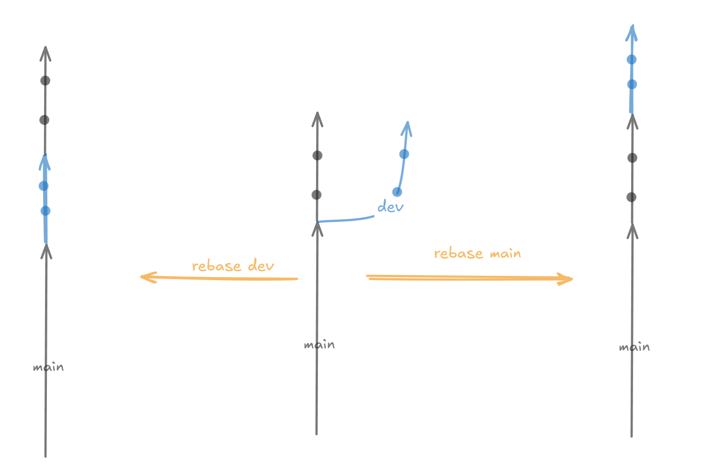
rebase的工作原理是，找到两个分支的共同祖先，然后从共同祖先开始，将当前分支的提交应用到目标分支上；
为了演示两种不同的合并方式,我创建了两个分支,然后进行了一系列的commit;并把这个仓库复制一遍；
现在有两个分支,分别是main和rbs,共同祖先为merge conflict这一次提交,两个分支各自进行了一次提交,为main 1和rbs 1;
现在，假设我们要把main分支rebase到rbs分支上
这条命令会将merge conflict后，main分支上的提交接在rbs分支上
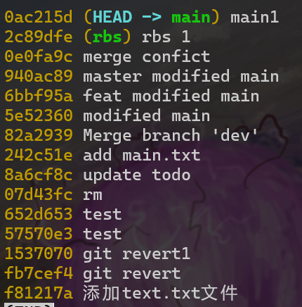
然后再试试看rebase rbs到main上
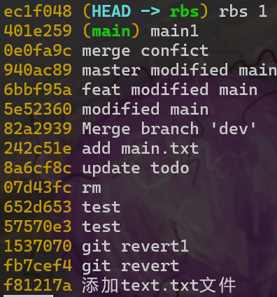
可以看到两次的提交记录是不同的;
Note
rebase的中文是"变基",这一含义十分清楚,再某个分支上运行git rebase <branch_name>命令,就是将当前分支的提交历史变基到目标分支上,即从两个分支的共同祖先开始,将当前分支的提交接在目标分支上;
关联远程仓库¶
Git的强大之处在于它能够与远程仓库进行交互,远程仓库可以是一个服务器,也可以是一个云平台,例如GitHub,GitLab,Gitee等,开发者们在自己的电脑上进行开发,然后将代码推送到远程仓库,其他人可以在远程仓库上进行协作;
这里主要介绍如何与GitHub进行交互;
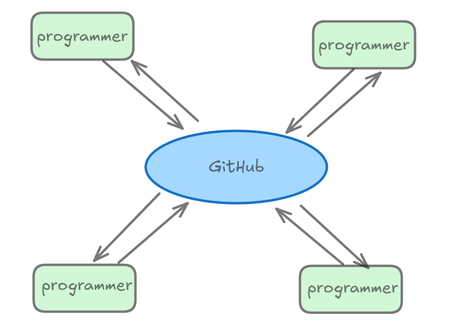
首先注册一个Github账号,然后创建一个仓库;例如创建一个名为test的仓库;
然后使用git remote add <remote_name> <remote_url>命令将本地仓库与远程仓库关联;
或者使用git clone <remote_url>命令将远程仓库克隆到本地;
然后在本地进行一系列操作,例如添加文件,进行commit,然后使用git push <remote_name> <branch_name>命令将本地仓库推送到远程仓库;
这一步实际上是在合并本地仓库和远程仓库;
如果是多人协作,在你push之前,可能别人已经修改过远程仓库,这时候你需要先pull一下,然后再push;
如果pull的时候发生冲突,你需要解决冲突,然后再push;
要想删除远程仓库,可以使用git remote remove <remote_name>